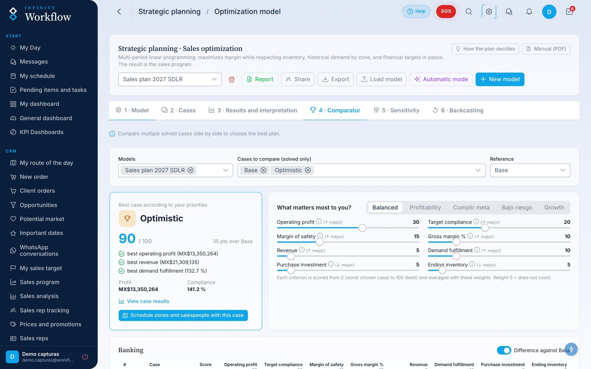
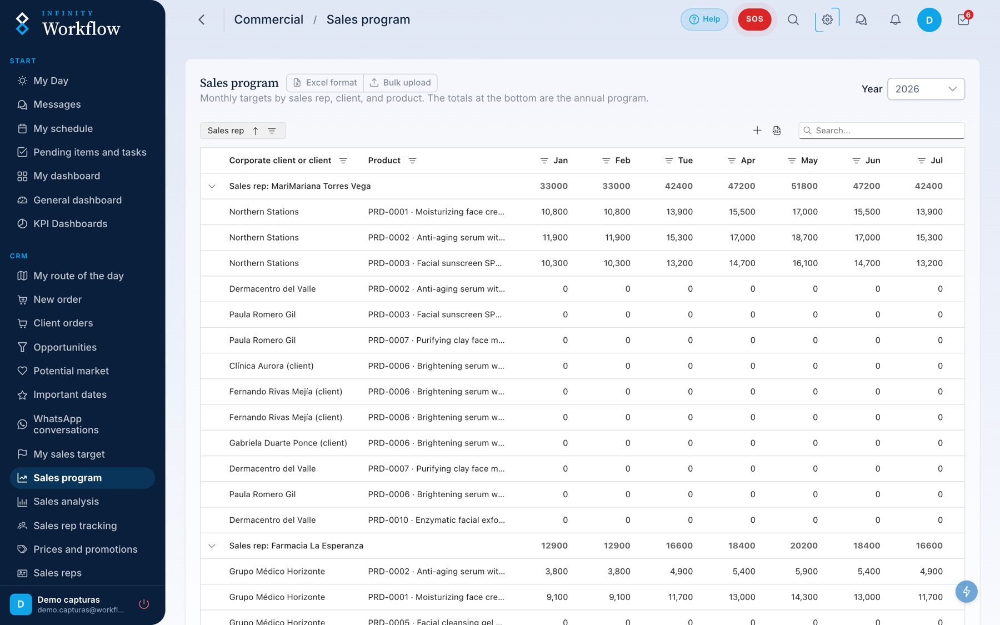
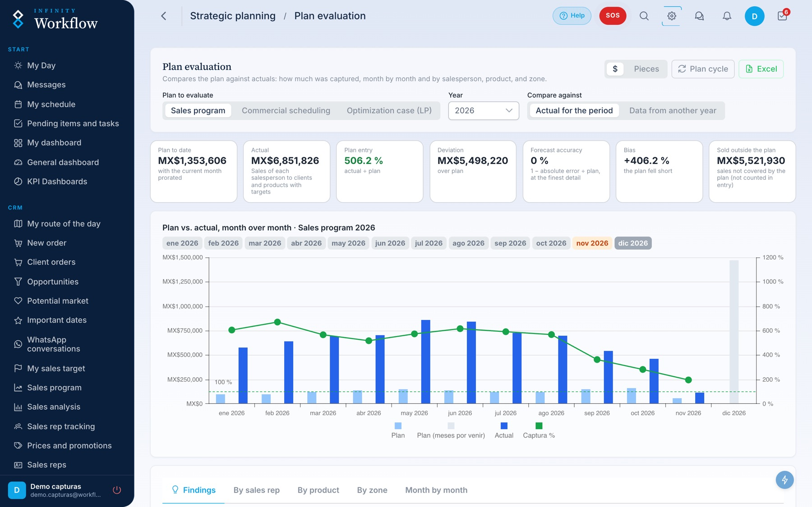
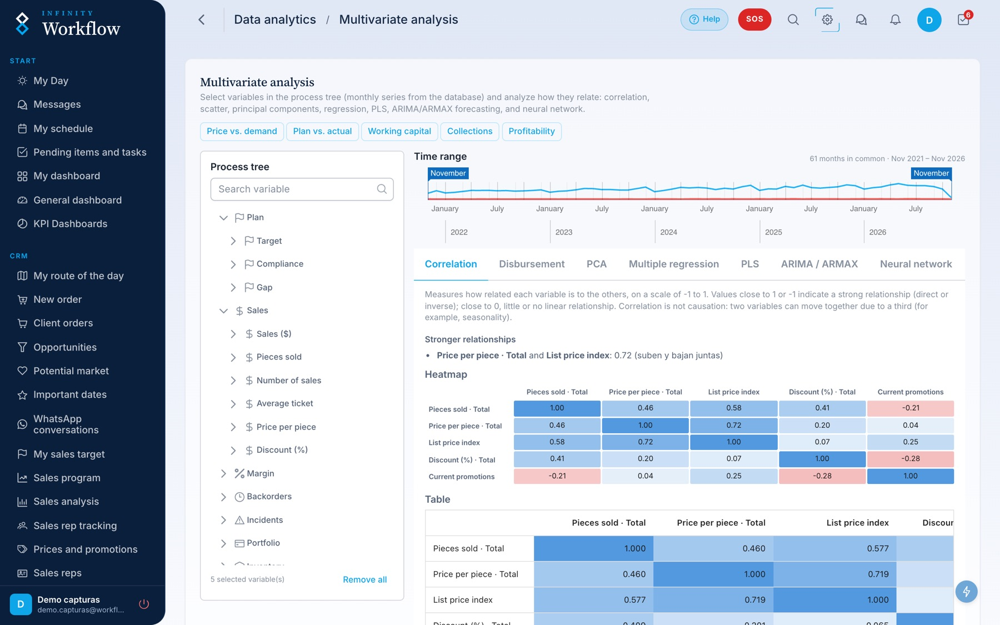
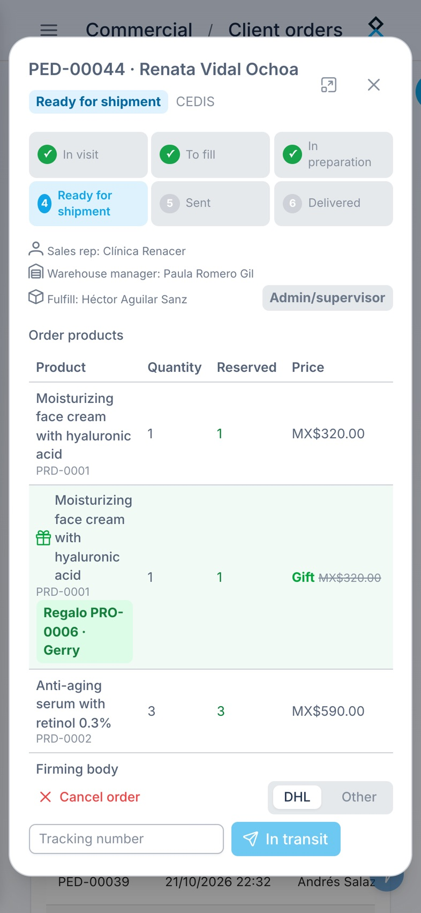
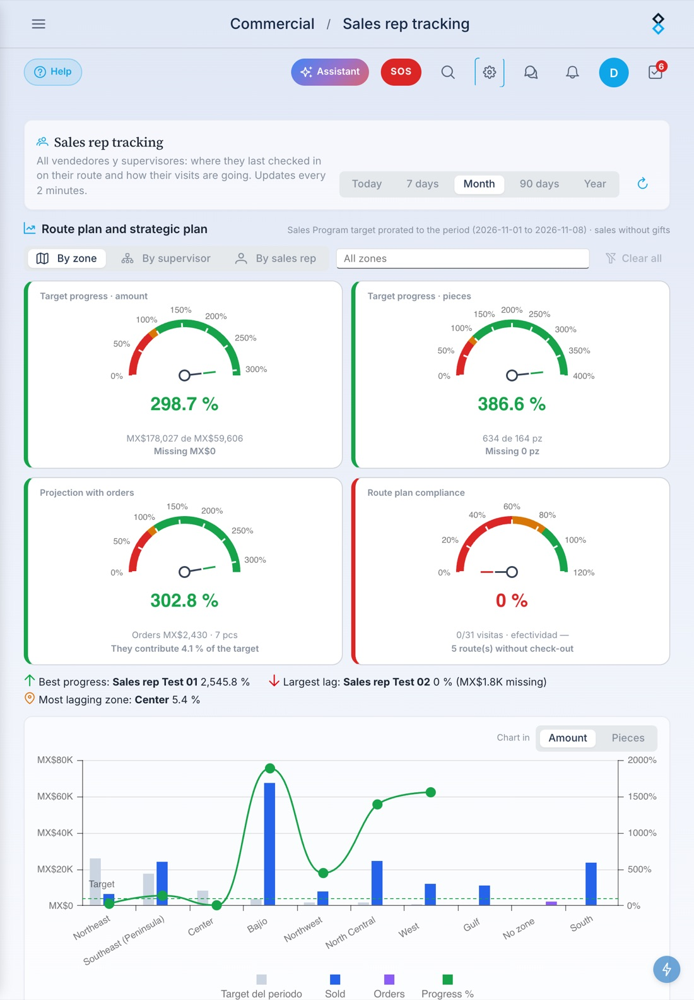
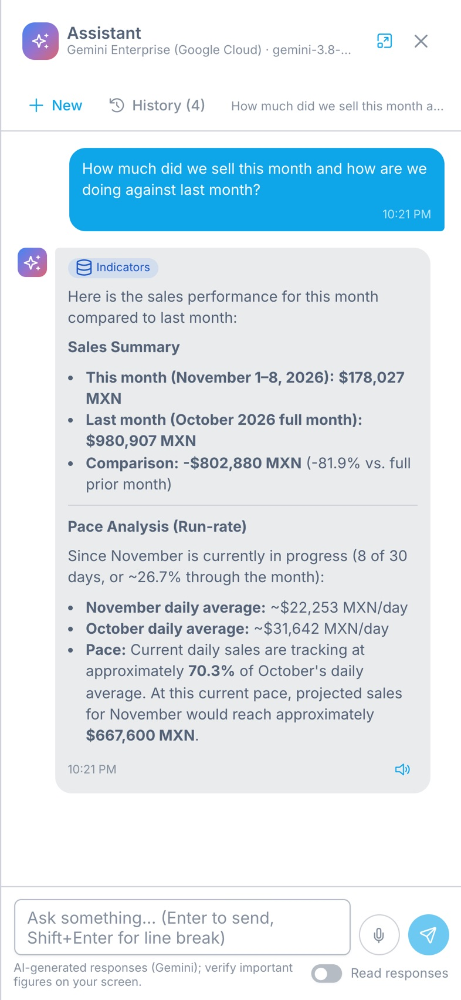

From the optimal plan to today’s visit.
The platform we built so strategy gets executed and measured: optimization-based planning, scheduling by owner, daily operations and evaluation against the plan, in a single cloud tool. It is modular: subscribe only to the modules your business needs and add more as you grow.
The whole commercial and operational cycle, connected.
Optimization (LP)
Sales, purchasing and inventory plan that maximizes margin with demand by zone, prices, promotions, targets and budget.
- Comparable cases and scenarios
- Sensitivity and backcasting
- Replanning that keeps closed months
Sales scheduling
Splits the plan among sales reps by track record and capacity, and agrees the target with each one.
- Targets by rep, product and month
- Rep–supervisor agreement
- Published sales program
Daily operations
Routes and visit plans, orders, inventory, purchasing, operations with RACI, staff, fleet and collections.
- Daily route and field tracking
- Inventory and purchase orders
- To-dos, tasks and approvals
KPIs and analytics
KPI dashboards, plan-versus-actual evaluation, multivariate analysis and an AI assistant that answers with your company’s data.
- Role-based dashboards
- Plan evaluation
- Assistant in English and Spanish
Data analytics
Find out what drives your sales: correlation, regression, principal components, forecasting, and neural networks on the company database, with no coding.
- Process tree with every variable
- Correlation, PCA, PLS, and ARIMA
- Saved analysis cases
Get only what your business needs.
Infinity Workflow is built from modules on a shared core: start with one, add the others when you need them, and turn on artificial intelligence whenever you want. They all share customers, products, zones, salespeople, and sales, so they work as a single system.
Already have a CRM or ERP? Subscribe only to Planning, Analytics, or Operations: your system sends customers, products, and sales through the integration API and receives the sales program.
Connects with what you already use.
Infinity Workflow does not force you to change your tools: it posts to your work channels, talks over WhatsApp, integrates with the CRM or ERP you already have, and brings the schedule to your Outlook or Google Calendar.
From strategy to measurable execution.
Real Infinity Workflow screens: the full path, from the optimal plan to each salesperson's visit and back to evaluation.
The most profitable plan, calculated, not guessed.
A mathematical optimization model decides how much of each product to sell in each zone and month, how much to buy, and when to order, while respecting demand, inventory, budget, and targets.
- Profit, revenue, and target attainment in one view, with the break-even point
- Plain-language findings: which promotion to launch, which price pays off, where inventory falls short
- Prices by month and zone, promotions, and backorders inside the same plan
Several scenarios, one decision backed by numbers.
Each case tests different assumptions (demand, price, cost, lead time), and the comparator scores them by what matters most to you.
- A 0–100 score by profitability, target attainment, risk, or growth
- Sensitivity and backcasting: how robust the plan is and what it would take to hit the target
- S&OP cycle to approve a single plan across sales, operations, and management

The plan lands in each person's target.
A second optimization splits the plan among salespeople according to the products and zones they already work, their trend, and their capacity.
- Targets by salesperson, customer, product, and month, in currency and units
- Salesperson–supervisor agreement and acknowledgment of receipt
- Published sales program that feeds routes and dashboards

Every visit knows which target it serves.
The visit plan suggests whom to see and what to offer; in the field, check-in, order, and check-out are recorded and the supervisor sees progress in real time.
- Route map and check-ins for the whole team, with visit effectiveness
- Progress against target in revenue and units, with projection from orders
- Orders during the visit with stock, promotions, and credit
Plan versus actual, every single day.
Evaluation compares the plan with what was sold by month, salesperson, product, and zone, measures forecast accuracy, and flags early where to replan.
- Plan capture, deviation, and bias month by month
- Findings by salesperson, product, and zone
- Controlled replanning: closed months untouched and a notice to each salesperson

Data analytics to see what is hidden.
Explore the full company database with advanced statistics: which variables move together, what explains sales, and what to expect in the coming months.
- Correlation map and strongest relationships, in plain language
- Regression, PCA, PLS, ARIMA, and neural networks without writing code
- Analysis cases that are saved and shared

A CRM your team actually uses, free to start.
Start with the free Base CRM and, when you want more, turn on the Pro tier: an AI agent that answers with your company's data and a tool to grow your customer portfolio.
The essentials for selling, organized.
Customers, visits, orders, and collections in one place, connected to each salesperson's target.
- Customer portfolio with a contact schedule and alerts on whom to visit
- Orders during the visit with stock, promotions, and credit
- Daily route with check-in and check-out and supervisor tracking
- Accounts receivable with balance aging
Limited users · ideal to try the platform
Your CRM, powered by AI.
Everything in Base, plus an agent that analyzes for you and a tool to find your next customers.
- AI agent that answers in natural language with your company's sales, targets, customers, and pending items
- Portfolio expansion: prospects in your market by ZIP code, compared with your current customers and ready to assign to a route
- Product recommendations on every order, based on history and the salesperson's target
- WhatsApp conversation summaries with agreements and follow-ups
AI with a monthly quota · the administrator decides who uses it
The CRM in every salesperson's pocket.
Works in the browser of any iPhone, Android, or iPad, with nothing to install: portfolio, orders, collections, team tracking, and the AI agent, with the same information the office sees.



Companies with teams in the field.
It was born at a dermocosmetics company that sells to physicians, and it works the same in any business where one person recommends and another buys.
Pharmaceuticals and dermocosmetics
Medical visits, targets by rep, sales program, inventory and planning.
Veterinary and agrochemicals
Visits to veterinarians, agronomists, distributors and growers, with seasonal planning.
Medical devices
Visits to specialists, quotes, purchase orders, inventory and collections.
Building materials, finishes and publishing
Follow-up with the architects or teachers who specify, projects and targets by promoter.
A pilot with your own data.
We start with a pilot: we load your catalog, your sales history and your team, solve your first optimal plan and turn it into targets by person. At the end, you decide with numbers.
- Cloud-based, nothing to install; works on computers and phones
- Role- and section-based access, two-factor authentication and passkeys
- Trial accounts for the pilot
- English and Spanish, including reports and the assistant